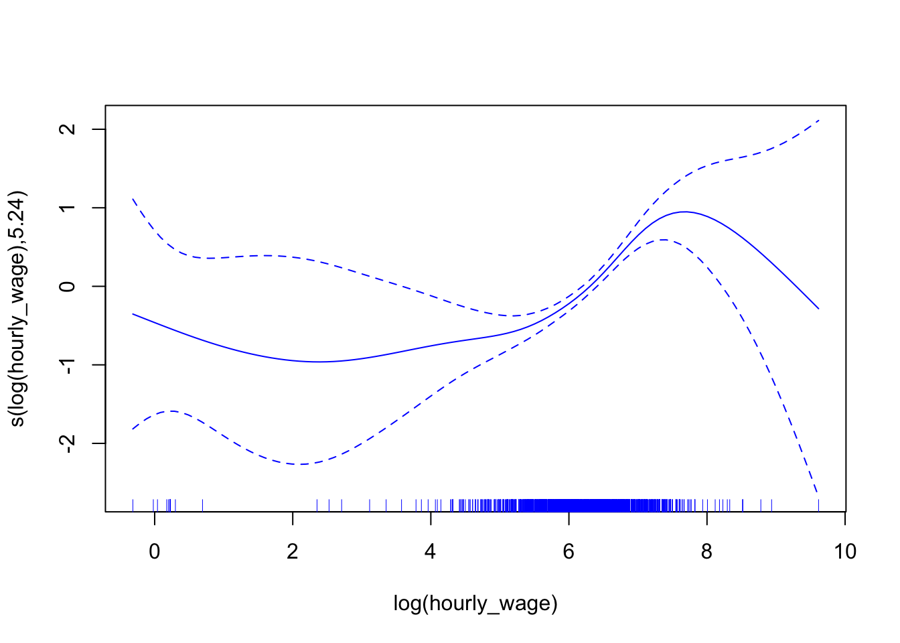
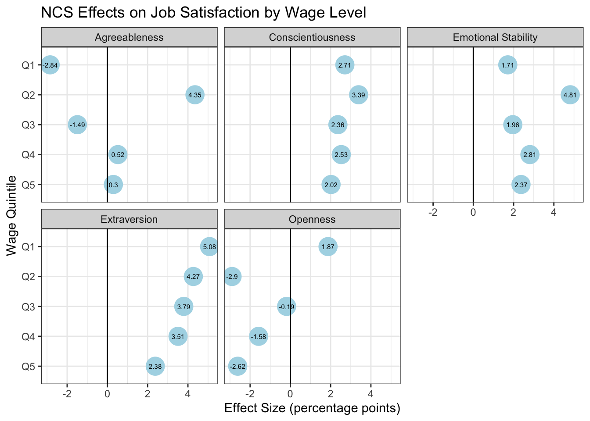

6 Эффект некогнитивных навыков на удовлетворенность работой: варьируется ли он в зависимости от уровня заработной платы?
6.1 Постановка исследовательской задачи
Субъективное измерение качества занятости — а именно удовлетворённость молодых работников своим положением на рынке труда — играет ключевую роль в формировании различных жизненных исходов молодёжи и молодых взрослых, зачастую выходящих за рамки трудовой сферы. Низкий уровень удовлетворённости работой среди молодёжи ассоциируется с деструктивным поведением на рабочем месте и злоупотреблением психоактивными веществами, включая употребление наркотиков (Mangione & Quinn, 1975), алкоголя (Hight & Park, 2019; Kohan & O’connor, 2002) и даже совершением преступлений (Chioda, 2017). Более того, удовлетворённость работой существенно влияет на уровень удержания работников [job retention]: довольные сотрудники с большей вероятностью продолжают работать на своих должностях, тогда как неудовлетворённость на раннем этапе карьеры нередко приводит к увольнению, безработице или отказу от участия в рынке труда вообще (Berber и др., 2022; Chavadi и др., 2021; Lehtonen и др., 2021; SHUANG, 2011; Taris и др., 1992), что влечёт за собой значительные социальные и экономические издержки. Неблагоприятные психосоциальные условия на первой работе негативно сказываются на психическом здоровье молодых работников, тогда как получение удовлетворяющей работы сопровождается значительными улучшениями по сравнению с докарьерным периодом (Milner и др., 2016). Всё вышеперечисленное подчеркивает, что молодёжь представляет собой ключевую демографическую группу для динамики рынка труда. Удовлетворённость работой необходима для формирования мотивированной и эффективной рабочей силы.
Хотя здравый смысл подсказывает, что заработная плата является главным фактором удовлетворённости работой — иными словами, лучшее вознаграждение делает работников счастливее — данные исследований из разных дисциплин дают неоднозначные результаты. Экономический подход к удовлетворённости работой исходит из предположения, что «в традиционных микроэкономических моделях предложения труда полезность от работы определяется уровнем дохода и количеством рабочего времени, необходимого для его получения» (Medgyesi & Zólyomi, 2016). Другими словами, экономические модели трактуют удовлетворённость как производную от сделанного выбора на рынке труда. В то же время, социологические исследования подчеркивают важность трудовых ценностей и установок для формирования удовлетворённости (Kalleberg, 1977; Kalleberg & Loscocco, 1983; Kalleberg & Reve, 1993; Wyrwa & Kaźmierczyk, 2020). В психологических работах взаимосвязь между оплатой труда и удовлетворённостью также не является однозначной (Judge и др., 2010). При этом психологические теории предлагают более дифференцированный взгляд, выделяя три подхода к пониманию предикторов удовлетворённости: ситуационный (опирающийся на объективные факторы труда, такие как оплата, график и условия труда), диспозиционный (подчеркивающий роль личностных характеристик), а также интерактивный, сочетающий оба подхода (Judge & Klinger, 2008).
Исторически удовлетворённость работой не входила в число основных интересов трудовых экономистов. Самые ранние исследования в этой области, появившиеся в конце 1970-х годов, сосредотачивались в первую очередь на относительных заработках и эффектах окружения [peer effects] (Borjas, 1979; Freeman, 1978; Hamermesh, 1977). Эти работы рассматривались как экономическая адаптация теории разрыва между ожиданиями и достижениями [goal-achievement gap theory] (Lévy-Garboua & Montmarquette, 2004; Michalos, 1980). В последние годы, однако, всё больше экономистов в своих попытках объяснить индивидуальный успех обращаются к личностным характеристикам. Существенный массив работ уже оценивает влияние черт личности на занятость, заработки, продуктивность труда и другие социально-экономические исходы, включая результаты за пределами рынка труда (см. обзоры в Borghans и др. (2008) и Almlund и др. (2011)). В экономике эти характеристики трактуются как некогнитивные или социально-эмоциональные навыки, подчеркивая их изменяемость в раннем возрасте, а также важную роль среды и наследственных факторов. Однако классификация этих черт как “навыков” обусловлена в первую очередь их продуктивной природой, доказанной через влияние на индивидуальные траектории успеха. Для их измерения в экономике чаще всего используется шкала «Большой пятёрки» (Big Five Inventory), описывающая личность по пяти независимым факторам: открытость опыту, добросовестность, экстраверсия, доброжелательность и эмоциональная стабильность (McCrae & Costa, 1987). Несмотря на популярность некогнитивных характеристик в исследованиях человеческого капитала, их влияние на удовлетворённость работой до сих пор остаётся преимущественно предметом психологических исследований, основанных, как правило, на небольших выборках. Однако именно для молодых работников, сталкивающихся с неопределёнными перспективами трудоустройства, несоответствием между образованием и спросом на рынке, а также временной или нестабильной занятостью, эти навыки могут иметь решающее значение.
Настоящее исследование восполняет этот пробел, анализируя взаимосвязь между некогнитивными характеристиками и удовлетворённостью работой среди молодых работников на российском рынке труда. В то время как предыдущие работы анализировали это явление для общей популяции на национально репрезентативных выборках (Зудина, 2024), ни одно исследование не было специально сфокусировано на молодёжи, переходящей из системы образования в сферу занятости. Международные исследования также редко акцентируют внимание на молодёжи, несмотря на практическую важность таких данных для формирования политики интеграции в рынок труда. Молодые работники сталкиваются с особыми вызовами — прежде всего, нестабильностью занятости, которая, как показывают исследования, повышает риски увольнения и ухудшения психического здоровья (Klug, 2017; Lee и др., 2008; Steenackers & Guerry, 2016). Понимание того, каким образом некогнитивные навыки влияют на удовлетворённость работой, может способствовать разработке таргетированных мер по повышению качества занятости и снижению текучести среди молодёжи. Включение субъективных параметров занятости в фокус государственной политики может существенно способствовать снижению отчуждённости и формированию устойчивых карьерных траекторий.
Целью данного исследования является анализ связи между некогнитивными характеристиками и общей удовлетворённостью работой, а также удовлетворённостью ключевыми её аспектами: оплатой труда, условиями труда и карьерными перспективами среди молодых работников. Учитывая проблему эндогенности, обусловленную уровнем заработка, а также межпоколенческую передачу социально-экономического статуса, при которой молодёжь из более обеспеченных семей получает доступ к более высокооплачиваемым позициям, в исследовании также рассматривается, различается ли влияние некогнитивных навыков на удовлетворённость работой в зависимости от квинтиля заработной платы. Кроме того, в исследовании проверяется наличие U-образной зависимости между заработной платой и удовлетворённостью работой, ранее выявленной в международной литературе (Brown и др., 2009; Clark & Oswald, 1996), в условиях российского рынка труда среди работающей молодёжи. Исследование основано на данных Российского мониторинга экономического положения и здоровья населения (РМЭЗ), включающих измерения некогнитивных навыков в 26-й (2016 год) и 28-й (2019 год) волнах. Для учёта смещения выборки, обусловленного селекцией по занятости, и эндогенности, связанной с уровнем заработной платы, применяется методология многоволнового (иерархического) регрессионного анализа с использованием взвешивания на основе обратной вероятности включения (Fuentes и др., 2021; Gelman & Hill, 2006; Keil и др., 2023). Данное исследование представляет собой первую комплексную попытку изучить связь между некогнитивными навыками и удовлетворённостью работой среди молодых работников в России с учётом получаемого ими дохода. Использование современных методологических решений и фокус на группе, находящейся на стыке образования и занятости, позволяет получить выводы, актуальные не только для российской, но и для международной повестки в области политики занятости молодёжи.
6.2 Эконометрическая верификация
Перед тем как перейти к анализу влияния некогнитивных навыков на удовлетворённость работой, исследование сначала рассматривает взаимосвязь между почасовой заработной платой и удовлетворённостью работой среди молодёжи. Для учёта возможной нелинейности в данной зависимости применяется обобщённая аддитивная модель (Generalized Additive Model [GAM]) (Hastie & Tibshirani, 2017). GAM представляет собой регрессионный подход, обеспечивающий гибкость за счёт использования непараметрических сглаживающих кубических сплайнов, что позволяет эффективно выявлять криволинейные зависимости между почасовой оплатой труда и удовлетворённостью работой. Хотя логарифмическое преобразование заработной платы является распространённым методом устранения нелинейности, оно предполагает равномерный убывающий предельный эффект, что может не позволить выявить вариации в эффектах заработной платы на удовлетворённость после достижения точки насыщения, характерной для логарифмических функций.
В настоящем исследовании, сохраняя логарифмическое преобразование для устранения скошенности распределения заработной платы и минимизации влияния выбросов, мы применяем непараметрическое сглаживание [non-parametric smoothing spline] к логарифму почасовой оплаты труда. Это позволяет выявить потенциальные нелинейности и проследить, как формируется взаимосвязь по всей шкале распределения зарплаты. Такой подход позволяет обнаружить паттерны (например, точки убывающей отдачи), которые были бы скрыты при использовании более простых преобразований. Анализ был выполнен с использованием пакета mgcv в R (Wood, 2011). Подробное изложение методологии GAM выходит за рамки настоящего исследования, но доступно в работе Wood (2006).
После данного предварительного анализа исследование сосредотачивается на основном исследовательском вопросе: влияет ли наличие некогнитивных навыков на удовлетворённость работой. Мы выдвигаем гипотезу, что данный эффект может варьироваться в зависимости от уровня заработной платы, что подчёркивает необходимость предварительного анализа связи между зарплатой и удовлетворённостью работой. Для тестирования влияния некогнитивных навыков применяется многоуровневое (смешанное) моделирование. Этот подход хорошо подходит для наших данных, поскольку учитывает множественные источники эндогенной вариации через случайные перехваты и наклоны.
Учитывая несбалансированную панельную структуру данных за 2016 и 2019 годы, модель включает случайные интерсепты по индивидуальному идентификатору, что позволяет учитывать зависимость между повторяющимися наблюдениями одного и того же респондента. Кроме того, поскольку региональные различия в доступе к рынку труда и трудовых результатах в России хорошо задокументированы, в модель также включены случайные интерсепты по регионам для учёта пространственной гетерогенности в удовлетворённости работой.
Мы также признаём сложный характер взаимосвязи между удовлетворённостью работой, некогнитивными навыками и заработной платой. С одной стороны, заработная плата является значимым источником вариации в удовлетворённости работой; с другой стороны, личностные характеристики выступают важными предикторами индивидуального дохода (Collischon, 2019; Edin и др., 2022; Lindqvist & Vestman, 2011). Для изоляции эффекта некогнитивных навыков на удовлетворённость работой модель оценивает их влияние внутри каждой квинтильной группы заработной платы путём включения случайных наклонов [random slopes] по некогнитивным навыкам. Во-первых, такая спецификация позволяет избежать смещения оценок, возникающего вследствие эндогенной связи между зарплатой и некогнитивными характеристиками. Во-вторых, данный подход позволяет проверить гипотезу о гетерогенности эффекта некогнитивных навыков в зависимости от уровня оплаты труда. Расчёты моделей производятся с использованием пакета lme4 в R (Bates и др., 2015). Поскольку данный пакет не предоставляет p-значений по умолчанию, для их получения используется пакет lmerTest (Kuznetsova и др., 2017).
Наконец, ещё один методологический аспект касается смещения выборки, возникающего в результате селекции в занятость. Для преодоления этой проблемы применяются инверсные вероятностные веса (inverse probability weights), основанные на оценках propensity score, с использованием пакета WeightIt в R (Greifer, 2024). Этот подход позволяет скорректировать вероятность занятости на основе экзогенных факторов, таких как возраст, пол, уровень образования, регион и тип населённого пункта. Весовые коэффициенты затем включаются в смешанные модели, обеспечивая корректировку смещения выборки и повышение обобщаемости результатов на более широкую популяцию молодых взрослых в России.
6.3 Результаты
6.3.1 Связь между заработной платой и удовлетворённостью работой
Результаты GAM-регрессии, представленные на Рисунок 6.1, подтверждают, что связь между логарифмом почасовой заработной платы и удовлетворённостью работой является криволинейной. При низких уровнях заработной платы уровень удовлетворённости также находится ниже среднего значения модели (т.е. 0 на оси y). Однако с ростом заработной платы удовлетворённость также увеличивается, достигает точки насыщения в интервале между 7 и 8 логарифма почасовой ставки, после чего резко снижается. Вогнутая форма зависимости означает, что после определённого уровня рост заработной платы не приводит к росту удовлетворённости работой, что указывает на наличие других значимых факторов. Это также подчёркивает важность учёта данной криволинейности для адекватного понимания взаимосвязей между заработной платой, удовлетворённостью работой и некогнитивными навыками. Это наблюдение направляет дальнейший анализ к оценке ключевых источников вариации удовлетворённости работой, в том числе степени, в которой различия в зарплате объясняют различия в удовлетворённости.
6.3.2 Источники вариации удовлетворённости работой
Многоуровневой анализ начинается с изучения источников вариации удовлетворённости работой. Базовая смешанная модель, не включающая предикторы в фиксированной части, содержит случайные перехваты (random intercepts) для идентификатора индивида, региона и квинтильных групп почасовой заработной платы. Результаты расчёта внутриклассовых коэффициентов корреляции (Intraclass Correlation Coefficients) представлены в Таблица 6.1. Полученные оценки показывают, что региональные различия объясняют почти 2% дисперсии удовлетворённости работой. Различия, связанные с профессиональными факторами, составляют 3.4%, тогда как различия между квинтилями заработной платы — 3.3%. Наконец, почти 23% вариации удовлетворённости объясняется индивидуальными различиями, не охваченными включёнными случайными перехватами.
| Group | ICC |
|---|---|
| Источник: расчеты автора на основе данных РМЭЗ за 2016 и 2019 годы. | |
| Individual ID | 0.226 |
| Region | 0.02 |
| Occupation | 0.034 |
| Hourly Wage Quintile | 0.033 |
Хотя с помощью случайных перехватов можно оценить вклад каждого источника в общую вариацию, имеет смысл также определить долю вариации удовлетворённости работой, обусловленную некогнитивными навыками. Это можно сделать, сравнив значения маргинального R² между моделью 1, включающей только социоэкономические характеристики, и моделью, дополненной переменными некогнитивных навыков. В контексте смешанных моделей маргинальный R² отражает долю дисперсии, объяснённую фиксированной частью модели (т.е. неизменяющимися предикторами). Это отличается от внутриклассовых коэффициентов, отражающих дисперсию случайных эффектов. Эти значения приведены в Таблица 6.2. Разница между предельным R² модели только с социоэкономическими переменными и модели с добавленными некогнитивными навыками составляет 1.1%. Иначе говоря, некогнитивные навыки объясняют 1.1% дисперсии удовлетворённости работой через фиксированные эффекты.
6.3.3 Некогнитивные навыки и удовлетворённость работой
Анализ влияния социо-демографических предикторов, включённых в смешанные модели, приведённые в Таблица 6.2, показывает, что ни один из них не оказывает статистически значимого влияния на удовлетворённость работой среди молодёжи. Коэффициенты при возрастных переменных (возраст и его квадрат) показывают, что в рассматриваемых возрастных группах возраст не влияет на удовлетворённость. Также не выявлено статистически значимого влияния пола, уровня образования и типа населённого пункта.
Однако как модель с социоэкономическими переменными, так и модель с добавленными некогнитивными навыками выявили статистически значимые эффекты заработной платы и количества рабочих часов. В соответствии с экономическим подходом, заработная плата положительно влияет на удовлетворённость, а количество рабочих часов — отрицательно, поскольку индивиды стремятся максимизировать полезность при минимальных затратах. Так, рост логарифма почасовой зарплаты на 1% увеличивает вероятность быть удовлетворённым работой на 9.5%. Интересно, что эффект заработной платы немного снижается при добавлении некогнитивных навыков, что может свидетельствовать о частичном опосредовании эффекта заработной платы через некогнитивные характеристики. В то же время увеличение продолжительности рабочей недели на 10 часов снижает вероятность удовлетворённости на 1% (пограничная значимость на уровне p<0.1), и этот эффект устойчив в обеих моделях.
Среди пяти некогнитивных характеристик положительное и статистически значимое влияние оказали три: добросовестность, экстраверсия и эмоциональная стабильность. Наибольший эффект наблюдается у экстраверсии: увеличение на 1 стандартное отклонение увеличивает вероятность удовлетворённости на 4%. За ней следует эмоциональная стабильность (почти +3%), и добросовестность (+2.6%).
| M1 | M2 | M3 | |
|---|---|---|---|
| Источник: расчеты автора на основе данных РМЭЗ за 2016 и 2019 годы. | |||
| Intercept | -0.546 | -0.471 | 0.322 |
| (0.539) | (0.537) | (0.534) | |
| Age | 0.036 | 0.032 | 0.036 |
| (0.044) | (0.043) | (0.043) | |
| Age Squared | -0.001 | -0.001 | -0.001 |
| (0.001) | (0.001) | (0.001) | |
| Sex: Male | -0.016 | -0.022 | -0.029 |
| (0.021) | (0.021) | (0.021) | |
| Education: No School | 0.037 | 0.037 | 0.046 |
| (0.033) | (0.033) | (0.033) | |
| Education: Secondary | -0.035 | -0.038 | -0.030 |
| (0.027) | (0.027) | (0.027) | |
| Education: Vocational | -0.026 | -0.027 | -0.022 |
| (0.024) | (0.023) | (0.023) | |
| Area: Urban-Type Settlement | 0.037 | 0.043 | 0.042 |
| (0.043) | (0.043) | (0.043) | |
| Area: City | 0.032 | 0.034 | 0.033 |
| (0.032) | (0.032) | (0.032) | |
| Area: Regional Center | -0.046 | -0.047 | -0.057 |
| (0.034) | (0.035) | (0.036) | |
| Hourly Wage (Log) | 0.095 | 0.092 | |
| (0.013) *** | (0.013) *** | ||
| Working Hours Per Week | -0.001 | -0.001 | 0.001 |
| (0.001) + | (0.001) + | (0.001) | |
| Openness | -0.008 | -0.011 | |
| (0.011) | (0.014) | ||
| Conscientiousness | 0.026 | 0.026 | |
| (0.010) ** | (0.010) * | ||
| Extraversion | 0.040 | 0.038 | |
| (0.009) *** | (0.010) *** | ||
| Agreeableness | 0.002 | 0.002 | |
| (0.010) | (0.017) | ||
| Emotional Stability | 0.028 | 0.027 | |
| (0.009) ** | (0.011) * | ||
| Num.Obs. | 2937 | 2937 | 2937 |
| R2 Marg. | 0.021 | 0.032 | 0.025 |
| R2 Cond. | 0.275 | 0.278 | |
6.3.4 Варьируются ли эффекты некогнитивных навыков в зависимости от квинтиля заработной платы?
Для изучения взаимодействия между удовлетворённостью работой, заработной платой и некогнитивными навыками была построена третья модель, в которой логарифм почасовой зарплаты исключён из фиксированной части, а наклоны некогнитивных навыков варьируются по квинтилям зарплаты. Коэффициенты фиксированной части приведены в третьем столбце Таблица 6.2, а результаты случайной части визуализированы на Рисунок 6.2.
Наиболее интересный паттерн выявлен для экстраверсии: чем ниже уровень заработной платы, тем выше эффект экстраверсии на удовлетворённость работой. Так, для молодёжи из нижнего квинтиля заработной платы экстраверсия увеличивает вероятность удовлетворённости более чем на 5%. По мере роста квинтиля коэффициент снижается, достигая 2.38% для верхнего квинтиля. Схожий, хотя и менее выраженный паттерн наблюдается для добросовестности: её эффект также выше в нижних квинтилях, но в целом можно сказать, что более добросовестные индивиды — более удовлетворены работой вне зависимости от зарплаты. Наибольший эффект добросовестности — в 3.39% — наблюдается во втором квинтиле, наименьший — в пятом (2.02%).
Интересно, что наибольший эффект эмоциональной стабильности наблюдается во втором квинтиле зарплаты (почти 5%), то есть среди молодёжи с доходом ниже медианного, но не на самом дне распределения. За ним следует четвёртый квинтиль (2.8%).

6.3.5 Эффект некогнитивных навыков на отдельные аспекты удовлетворенности работой
На заключительном этапе анализа было изучено влияние некогнитивных навыков на три отдельных аспекта удовлетворенности работой: удовлетворенность возможностями карьерного роста, условиями труда и уровнем заработной платы. Результаты смешанных моделей представлены в Таблица 6.3.
| Career | Working Conditions | Wages | |
|---|---|---|---|
| + p < 0.1, * p < 0.05, ** p < 0.01, *** p < 0.001 | |||
| Источник: расчеты автора на основе данных РМЭЗ за 2016 и 2019 годы. | |||
| Age | -0.081+ | -0.024 | -0.130** |
| (0.047) | (0.044) | (0.045) | |
| Age Squared | 0.002+ | 0.000 | 0.002** |
| (0.001) | (0.001) | (0.001) | |
| Sex: Male | -0.020 | -0.035+ | -0.028 |
| (0.023) | (0.021) | (0.020) | |
| Education: No School | -0.048 | 0.001 | -0.021 |
| (0.036) | (0.033) | (0.033) | |
| Education: Secondary | -0.056+ | -0.039 | -0.056* |
| (0.029) | (0.028) | (0.026) | |
| Education: Vocational | 0.007 | -0.023 | -0.026 |
| (0.025) | (0.024) | (0.024) | |
| Area: Urban-Type Settlement | -0.027 | 0.105* | 0.034 |
| (0.047) | (0.044) | (0.046) | |
| Area: City | -0.032 | 0.078* | 0.021 |
| (0.035) | (0.034) | (0.036) | |
| Area: Regional Center | -0.097* | 0.004 | -0.046 |
| (0.039) | (0.038) | (0.042) | |
| Hourly Wage (Log) | 0.087*** | 0.064*** | 0.143*** |
| (0.014) | (0.013) | (0.013) | |
| Working Hours Per Week | 0.000 | -0.002* | 0.000 |
| (0.001) | (0.001) | (0.001) | |
| Openness | -0.003 | -0.002 | -0.004 |
| (0.012) | (0.011) | (0.011) | |
| Conscientiousness | 0.045*** | 0.022* | 0.032** |
| (0.011) | (0.010) | (0.010) | |
| Extraversion | 0.043*** | 0.030** | 0.028** |
| (0.010) | (0.009) | (0.010) | |
| Agreeableness | 0.015 | 0.020* | 0.004 |
| (0.010) | (0.010) | (0.010) | |
| Emotional Stability | 0.026** | 0.024** | 0.013 |
| (0.010) | (0.009) | (0.010) | |
| SD (Observations) | 0.491 | 0.465 | 0.464 |
| Num.Obs. | 2937 | 2937 | 2937 |
| R2 Marg. | 0.034 | 0.025 | 0.062 |
| R2 Cond. | 0.270 | 0.256 | |
| RMSE | 0.35 | 0.34 | 0.33 |
Полученные результаты по трем аспектам удовлетворенности работой в значительной степени подтверждают выводы общей модели удовлетворенности. Черты личности «добросовестность» и «экстраверсия» демонстрируют положительное и статистически значимое влияние во всех трех проанализированных областях. Эффект добросовестности наиболее выражен в контексте удовлетворенности карьерными перспективами: увеличение данной характеристики на одну стандартную девиацию повышает вероятность быть удовлетворенным возможностями карьерного роста на 4.5%. Кроме того, добросовестность ассоциируется с увеличением вероятности удовлетворенности заработной платой на 3.2% и условиями труда — на 2.2%.
Аналогично, экстраверсия оказывает наибольшее влияние на удовлетворенность карьерным развитием, увеличивая вероятность удовлетворенности профессиональными перспективами на 4.3%. Также экстраверсия связана с ростом удовлетворенности условиями труда на 3.0% и заработной платой на 2.8%.
Эмоциональная стабильность оказывает статистически значимое положительное влияние на удовлетворенность как карьерным ростом, так и условиями труда, повышая вероятность удовлетворенности на 2.6% и 2.4% соответственно. Наконец, анализ показывает, что индивиды с более высоким уровнем уживчивости чаще выражают удовлетворенность условиями труда: рост вероятности удовлетворенности составляет 2.0%.
6.4 Ограничения
Эмпирическая стратегия в настоящей главе имеет ряд ограничений. Прежде всего, анализ основан на самооценочных показателях удовлетворенности трудом, которые могут быть подвержены искажениям и неточностям. Первичные переменные представляют собой порядковую шкалу, включающую лишь пять градаций, при этом каждая из концептуальных составляющих удовлетворенности измерялась с помощью одного вопроса. Эти особенности не позволяют агрегировать показатели в единую шкалу и проводить анализ, основанный на квазиконтинуальном подходе, более точно отражающем вариативность удовлетворенности. В связи с этим в исследовании используется бинарный индикатор, что ограничивает возможность учета нюансов в восприятии трудовой деятельности респондентами.
Кроме того, несмотря на то, что в модели предусмотрены случайные интерсепты по признаку рода занятий для контроля базовой вероятности удовлетворенности трудом, исследование не учитывает влияние таких контекстуальных и организационных факторов, как баланс между работой и личной жизнью, стабильность занятости и корпоративная культура. Между тем, эти факторы могут оказывать существенное влияние на удовлетворенность, выступая в роли модераторов или смешивающихся переменных, способных усиливать или ослаблять эффект некогнитивных характеристик. Их отсутствие в модели ограничивает полноту интерпретации механизмов формирования удовлетворенности, открывая перспективу для будущих исследований, ориентированных на более комплексные и взаимодействующие модели.
6.5 Обсуждение
Полученные результаты вносят вклад в расширяющееся направление научных исследований, посвященных роли некогнитивных навыков в формировании социально-экономических результатов индивидов в российском контексте. Если связь между некогнитивными характеристиками и внешними признаками успешности на рынке труда в России ранее уже была зафиксирована в литературе (Avanesian и др., 2024; Maksimova, 2019; Зудина, 2022; Рожкова, 2019), то данное исследование дополняет это понимание, показывая, что некогнитивные навыки оказывают значимое влияние и на внутренние аспекты трудовых исходов, такие как удовлетворенность работой. При этом даже в международной научной повестке данная тема получила ограниченное внимание со стороны экономистов и преимущественно рассматривалась в рамках психологического подхода, сосредоточенного на связи черт личности и удовлетворенности трудом.
Результаты настоящего анализа в целом согласуются с выводами психологических исследований, несмотря на то, что последние чаще всего основывались на менее репрезентативных и более ограниченных по объему выборках. Метааналитические обзоры подтверждают выраженное влияние таких черт, как экстраверсия, невротизм (обратная шкала эмоциональной устойчивости) и добросовестность. Например, фундаментальная работа Judge и др. (2002), включившая 334 корреляции из 16 независимых выборок, выделяет эти три черты как наиболее значимые, с универсальными эффектами экстраверсии и эмоциональной стабильности.
Кроме того, полученные результаты подтверждают выводы исследования Зудина (2024), выполненного на репрезентативных данных взрослого населения России. В нем также фиксируется положительное влияние экстраверсии, эмоциональной устойчивости и добросовестности на субъективные трудовые исходы. Интересно отметить, что некогнитивные навыки оказывают аналогичное влияние на удовлетворенность работой у молодежи, что и среди взрослого трудоспособного населения. Это контрастирует с результатами по заработной плате, где влияние некогнитивных характеристик демонстрирует возрастную динамику. Существующие исследования указывают на то, что экономическая отдача от некогнитивных навыков может изменяться на разных этапах профессионального пути (Avanesian, 2025). Такое расхождение может свидетельствовать о том, что вклад некогнитивных навыков в субъективные трудовые исходы (в частности, в удовлетворенность трудом) носит более устойчивый и непосредственный характер. Иными словами, такие качества, как экстраверсия, эмоциональная устойчивость и добросовестность, могут способствовать более высокой удовлетворенности молодых работников своей профессиональной деятельностью и, тем самым, играть важную роль в обеспечении ранней вовлеченности и удержании молодежи на рабочем месте.
6.6 Рекомендации
Результаты исследования указывают на ряд мер, которые организации могут предпринять для повышения своей эффективности при вовлечении молодых сотрудников. В рамках анализа детерминант удовлетворённости трудом внимание было уделено некогнитивным навыкам как более широкой характеристике личности, способной опосредовать как производительность, так и удовлетворённость работой.
Одним из ключевых выводов является наличие нелинейной связи между уровнем заработной платы и удовлетворённостью работой. Согласно результатам модели GAM, наблюдается насыщение, а затем снижение удовлетворённости при достижении высоких доходов. Таким образом, увеличение финансовой мотивации не всегда осуществимо и, как показали данные, недостаточно эффективно в долгосрочной перспективе. Хотя краткосрочные выгоды от повышения оплаты труда возможны, они снижаются по мере продвижения молодых работников по карьерной лестнице и роста их доходов. В связи с этим, помимо справедливой системы вознаграждения, организациям следует учитывать иные факторы удовлетворённости трудом, такие как карьерное сопровождение, обратная связь, признание заслуг и автономность — параметры, способствующие как росту производительности, так и формированию позитивного психосоциального климата в коллективе.
Подтверждение значимого положительного влияния экстраверсии, эмоциональной устойчивости и добросовестности на удовлетворённость работой позволяет рекомендовать работодателям признать значимость этих личностных характеристик и инвестировать в их развитие, особенно среди молодых работников. Наиболее эффективными в данном контексте могут стать целенаправленные программы по развитию некогнитивных навыков, особенно на ранних этапах профессионального становления. Существенные преимущества могут быть достигнуты за счёт внедрения современных тренинговых форматов, направленных на развитие коммуникативных компетенций, эмоционального интеллекта и навыков самоменеджмента.
Наибольшее влияние на удовлетворённость работой, согласно результатам исследования, оказывает экстраверсия — особенно среди работников с низкими уровнями оплаты труда. Это свидетельствует о важности межличностных и эмоционально-экспрессивных черт в условиях ограниченных финансовых стимулов. Следовательно, необходимы более дифференцированные подходы к мотивации и профессиональному развитию молодых кадров. Удовлетворённые сотрудники, как правило, более общительны, энергичны, склонны к сотрудничеству и демонстрируют высокую вовлечённость в рабочий процесс. Высокая экстраверсия указывает на способность быстро устанавливать социальные связи и стремление получать поддержку от организации, что в перспективе может рассматриваться как элемент долгосрочного удержания персонала.
Удовлетворённость трудом определяется не только личностными чертами, но и условиями труда, а также вниманием к карьерным траекториям сотрудников. Это означает, что специалисты по управлению персоналом должны учитывать как сложность этого явления, так и то, что личностные особенности влияют на степень удовлетворённости различными аспектами работы. Например, для сотрудников с выраженной дружелюбностью важным фактором является качество физической и социальной рабочей среды. Обеспечение чёткости ролей и перспектив карьерного роста особенно значимо для эмоционально устойчивых работников. Такой подход позволяет добиться лучших результатов, чем универсальные стратегии вовлечения, поскольку последние, согласно результатам настоящего исследования, оказываются действенными лишь для работников с определённым набором личностных характеристик.
В связи с этим организациям следует стремиться к формированию поддерживающей и инклюзивной рабочей среды. Это возможно через реализацию прозрачной кадровой политики. Молодые сотрудники должны быть информированы о возможностях профессионального роста и развития. Доступ к программам повышения квалификации и обучению должен быть очевидным, а усилия организации по обеспечению сбалансированной нагрузки и отдыха — устойчивыми, включая инициативы, способствующие балансу между работой и личной жизнью.
Особое внимание следует уделить развитию добросовестности, так как данная черта способствует целеполаганию, планированию и эффективному исполнению задач. Комплексное понимание удовлетворённости трудом, охватывающее уровень оплаты, качество коммуникации между руководством и подчинёнными, интерес к выполняемой работе, корпоративную культуру и другие аспекты, позволяет выработать более эффективные стратегии работы с персоналом. Введение систем мониторинга удовлетворённости — например, регулярных опросов среди молодых сотрудников — будет способствовать лучшей интеграции персонала и повышению продуктивности труда.
Выводы настоящего исследования подчёркивают необходимость в таргетированных стратегиях вовлечения и удержания молодых специалистов. Быстрая карьерная траектория через участие в сложных проектах, поддержка морально-психологического климата и структурирование труда в логике проектной деятельности способствуют росту вовлечённости. Признание достижений молодых работников укрепляет их мотивацию и способствует формированию устойчивого чувства профессиональной значимости.
Учитывая, что некогнитивные навыки влияют на удовлетворённость трудом ещё до накопления материальных благ, ранний этап карьеры представляет собой критическое окно возможностей для формирования позитивного трудового опыта. Создание инклюзивной, прозрачной и поддерживающей социальной среды особенно для работников с низкими доходами или нестабильной занятостью позволит организациям формировать здоровую рабочую атмосферу, снижать текучесть кадров и повышать общую эффективность труда.
6.7 Заключение
Настоящая глава была посвящена оценке влияния некогнитивных навыков на удовлетворённость работой среди российской молодёжи в возрасте 15–29 лет на основе национально репрезентативных лонгитюдных данных РМЭЗ-ВШЭ (RLMS-HSE), собранных в 2016 и 2019 годах. Используя смешанные модели (mixed-effects models), учитывающие вариации, связанные с уровнем заработной платы посредством включения случайного коэффициента наклона (random slope), анализ позволил изолировать уникальный вклад черт личности по модели «Большой пятёрки» как в общую, так и в аспектную (доменно-специфичную) удовлетворённость работой.
Результаты показывают, что экстраверсия, добросовестность и эмоциональная стабильность оказывают статистически значимое положительное влияние на удовлетворённость работой, даже при контроле заработной платы и других социально-демографических факторов. Важно отметить, что эффект этих черт варьируется в зависимости от квинтиля заработной платы, причём экстраверсия демонстрирует наибольшее влияние среди низкооплачиваемых работников. Кроме того, значение каждого некогнитивного навыка зависит от конкретного аспекта удовлетворённости работой, что подчеркивает многомерную природу данного феномена.
Полученные результаты расширяют существующую литературу в области экономики труда, показывая, что некогнитивные навыки влияют не только на экзогенные параметры трудового успеха, такие как занятость или заработная плата, но и на его эндогенную составляющую — субъективную удовлетворённость, которая может рассматриваться как внутренняя награда за труд. Хотя экономические стимулы остаются важными, данное исследование демонстрирует, что развитие некогнитивных навыков представляет собой альтернативный и значимый канал повышения удовлетворённости трудом и удержания молодых сотрудников — группы, особенно уязвимой к профессиональной дезориентации на раннем этапе карьеры.
С точки зрения политики занятости и внутриорганизационного управления, результаты подчёркивают важность интеграции развития некогнитивных навыков в стратегии трудоустройства молодёжи. Интервенции, направленные на формирование эмоциональной стабильности, межличностных навыков и добросовестного отношения к работе, могут дать значительные результаты, особенно если они адаптированы к уровню дохода и особенностям конкретной рабочей среды.
Объединяя подходы психологии личности и экономики труда, данная глава вносит новые эмпирические данные в литературу по молодёжной занятости и предлагает практические рекомендации по повышению удовлетворённости работой немонетарными способами. Тем самым подтверждается ключевая роль личностных характеристик в формировании устойчивого и осмысленного участия молодёжи в рынке труда.